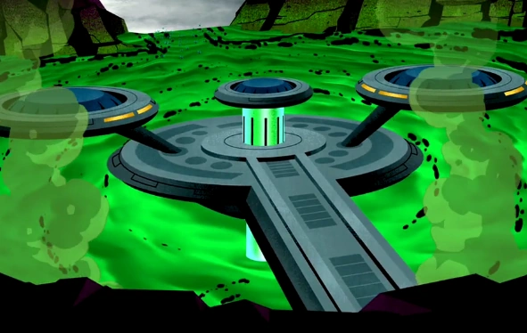
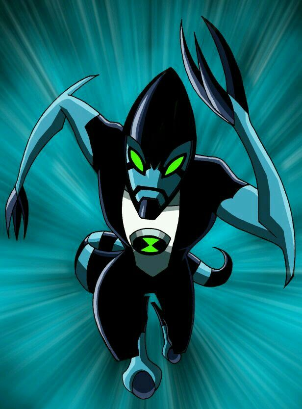
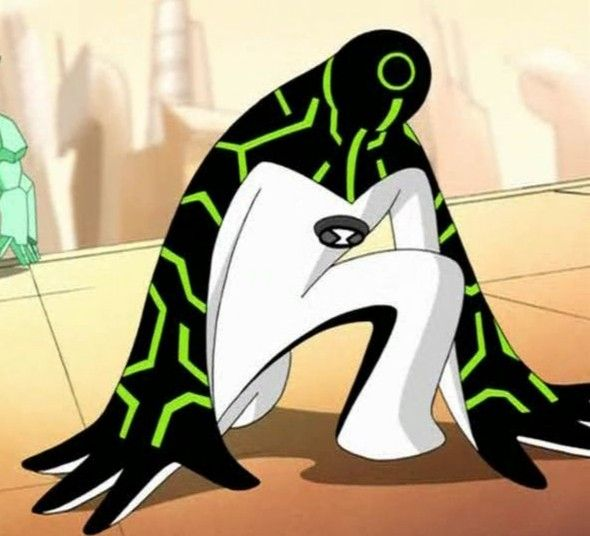

1. O que são Redes?
Assim como o planeta Primus se conecta a todos os Omnitrixes do universo para enviar o DNA alienígena, uma rede de computadores é um conjunto de dispositivos interconectados que compartilham dados e recursos.
2. Importância da Padronização
Imagine se um Galvaniano tentasse falar com um Vaxasauriano usando tecnologias totalmente diferentes. Seria o caos! A padronização funciona como a tecnologia universal dos Encanadores, garantindo que equipamentos de fabricantes diferentes falem a mesma língua (como OSI e TCP/IP).

3. Função dos Protocolos
Protocolos são as regras rígidas da comunicação. Pense neles como as travas de segurança do Omnitrix: determinam como a informação é empacotada, enviada e recebida, garantindo que nada se perca ou seja corrompido.

4. Diagnóstico de Rede
Assim como o Ultra T se infiltra e analisa sistemas tecnológicos, nós usamos o terminal do Windows (CMD) para testar e descobrir problemas na nossa rede de computadores.
> ipconfig: A sua Identidade de Encanador. Exibe o seu Endereço IP atual e as configurações do seu adaptador na rede.
> tracert [endereço]: O rastreador XLR8. Mostra a rota exata e cada "salto" (roteador) que a sua informação dá até chegar ao destino.